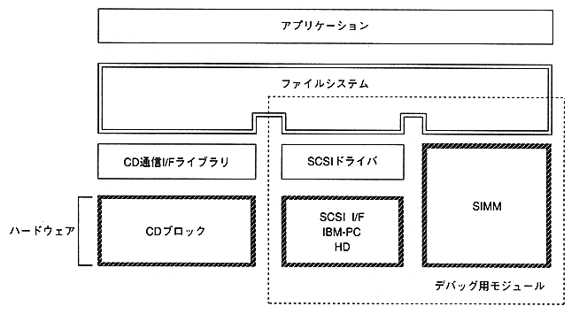

To use this library, the following libraries must be linked at the same time. ・ SHCNPIC.LIB SH7600 position independent code not supported library ・ SEGA_CDC.LIB CD communication interface library ・ SEGA_DMA.LIB DMA library ・ SEGA_CSH.LIB cache library